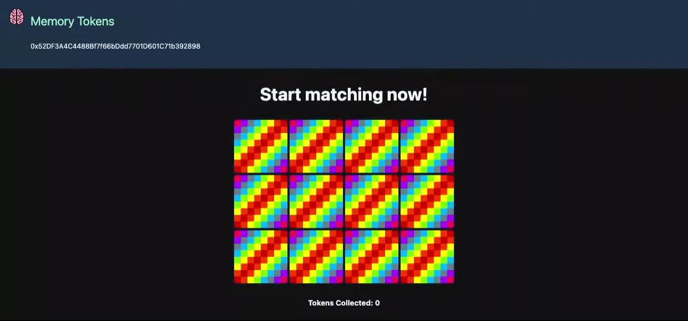

Experience
Match cards to mint real ERC-721 tokens on a private blockchain running inside your browser.

Description
The visible interaction provides the game-facing part of the project, while the underlying transaction or token operation supplies a separate state change. The saved description identifies how those two parts are connected.
A local blockchain demonstration is different from a public marketplace. The overview preserves that distinction and does not imply a financial product or a live external economy.
Detailed features
Interactive game interface
This part of the project contributes to the core interaction described above. Its role is presented through the project’s available interface, source, and visual preview.
Item or token interaction
The interface connects an in-game action with a blockchain-related operation. The project’s published configuration determines whether that operation uses a local chain or another environment.
Blockchain integration
The interface connects an in-game action with a blockchain-related operation. The project’s published configuration determines whether that operation uses a local chain or another environment.
Build summary
The project is presented with React · Solidity · Web3 · Ganache. Its implementation connects the input or controls, the project’s changing state, and the rendered interface. The Source action opens the saved code or build material for this entry.
- Technology
- React · Solidity · Web3 · Ganache
- Scope
- Interactive project
- Presentation
- 1240 × 580 · source quality
Feature video
Project recording · 1240 × 580 · Original resolution